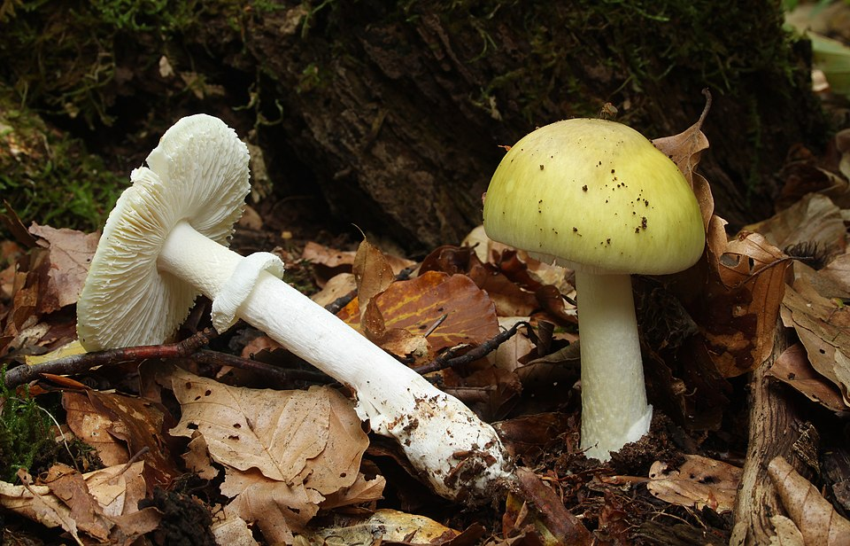

☠ Muchomor sromotnikowy
Amanita phalloides · rodzina muchomorowate (Amanitaceae)
☠ ŚMIERTELNIE TRUJĄCY
Jeden okaz wystarczy, aby zabić dorosłego człowieka. Brak antidotum. Odpowiada za 90% wszystkich śmiertelnych zatruć grzybami na świecie. Smak i zapach nie ostrzegają — wyglądać może jak jadalny grzyb.



Sezon
VII – XI
Kapelusz
5–12 cm, bladozielony/żółtawy
Blaszki
ZAWSZE BIAŁE
Pochwa (volva)
Biała, workowata — u podstawy
Pierścień
Biały, błoniasty, trwały
Siedlisko
Lasy liściaste i mieszane (buk, dąb)
Jak rozpoznać muchomora sromotnikowego
5 cech identyfikacyjnych — SPRAWDŹ WSZYSTKIE
1. KAPELUSZBladozielony, żółtozielony, oliwkowy — ale może być też ŻÓŁTAWY, a nawet BIAŁY (forma alba). Kolor kapelusza sam w sobie NIE jest pewnym kryterium!
2. BLASZKIZAWSZE białe, nigdy nie różowieją, nie brązowieją. To kluczowa cecha — blaszki białe przez całe życie owocnika.
3. POCHWAU podstawy trzonu biała POCHWA (volva) — workowaty kosz w ziemi. Odkop podstawę! Pochwa może być zakryta ziemią.
4. PIERŚCIEŃBiały błoniasty pierścień (annulus) na górnej części trzonu — zwisający jak spódniczka.
5. TRZONBiały, z delikatnym wzorem, bulwiasty u podstawy (bulwa wewnątrz pochwy).
Toksyny — mechanizm działania
| Toksyna | Działanie |
|---|---|
| Amatoksyny (α-amanitin) | Blokują enzym RNA-polimeraza II → zatrzymują syntezę białek → śmierć komórek wątroby i nerek. NIEODWRACALNE. |
| Fallotoksyny | Uszkadzają błony komórkowe — szybka faza objawów |
| Wirotoksyny | Dodatkowe uszkodzenia komórkowe |
| Odporność na obróbkę | Gotowanie, suszenie, zamrażanie, marynowanie NIE niszczy amatoksyn |
| Dawka śmiertelna | 0,1 mg amatoksyny/kg masy ciała — w jednym grzybie kilka mg |
Przebieg zatrucia — oś czasu
0–6 godzin: Brak lub minimalne objawy. Ofiara czuje się dobrze — to najgroźniejszy etap (zwłoka w szukaniu pomocy).
6–24 godziny: Nagłe silne wymioty, biegunka, skurcze żołądka, ból brzucha. Może nastąpić pozorna poprawa (faza „fałszywego powrotu do zdrowia") — NIE oznacza wyzdrowienia!
2–4 dobę: Wątroba i nerki zaczynają niewydolność. Żółtaczka, ciemny mocz, zaburzenia krzepnięcia. Faza cicha — ofiara może wyglądać relatywnie dobrze.
4–8 dób: Piorunująca niewydolność wątroby i nerek. Śpiączka wątrobowa. Śmierć lub przeszczep wątroby (jeśli możliwy).
Kluczowe: Gdy pojawiają się pierwsze objawy — jest już CZĘSTO ZA PÓŹNO na skuteczne leczenie. Jedyną szansą jest przeszczep wątroby.
6–24 godziny: Nagłe silne wymioty, biegunka, skurcze żołądka, ból brzucha. Może nastąpić pozorna poprawa (faza „fałszywego powrotu do zdrowia") — NIE oznacza wyzdrowienia!
2–4 dobę: Wątroba i nerki zaczynają niewydolność. Żółtaczka, ciemny mocz, zaburzenia krzepnięcia. Faza cicha — ofiara może wyglądać relatywnie dobrze.
4–8 dób: Piorunująca niewydolność wątroby i nerek. Śpiączka wątrobowa. Śmierć lub przeszczep wątroby (jeśli możliwy).
Kluczowe: Gdy pojawiają się pierwsze objawy — jest już CZĘSTO ZA PÓŹNO na skuteczne leczenie. Jedyną szansą jest przeszczep wątroby.
Z czym jest mylony — najgroźniejsze pomyłki
✓ Pieczarka łąkowa (jadalna)
- Blaszki RÓŻOWE (młoda) lub brązowe
- Brak pochwy u podstawy
- Przyjemny grzybowy zapach
- Miąższ lekko żółknie lub czerwienieje
☠ Muchomor (ŚMIERTELNY)
- Blaszki BIAŁE — zawsze
- Pochwa w glebie — ODKOP!
- Słodkawy lub neutralny zapach
- Miąższ nie zmienia koloru
✓ Gąska zielonka (jadalna)
- Blaszki żółtawozielone
- Brak pierścienia
- Brak pochwy
- Trzon masywny bez bulwy
☠ Muchomor forma alba (ŚMIERTELNA)
- Biały kapelusz — jeszcze groźniejszy!
- Mylony z gąską białą
- Te same białe blaszki, pochwa, pierścień
- Szczególnie niebezpieczny dla zbieraczy
Co robić przy podejrzeniu zatrucia
🚨 ZADZWOŃ NATYCHMIAST — NIE CZEKAJ NA OBJAWY
🇵🇱 Polska: 112 · Centrum Toksykologiczne: 22 831 98 05 🇨🇿 Czechy: 112 · Toksykologia: 224 919 293 🇸🇰 Słowacja: 112 · Toksykologia: 02 5477 4166- Zabierz okaz grzyba lub jego zdjęcie do szpitala — identyfikacja jest kluczowa
- Podaj dokładnie kiedy, co i ile zjedzono
- Nie czekaj na objawy — przy muchomorze sromotnikowym najważniejszy jest czas
- Nie wywołuj wymiotów bez konsultacji z centrum toksykologicznym
- Hospitalizacja konieczna nawet bez objawów jeśli podejrzewasz ten gatunek
Jak się ochronić — 5 zasad bezpieczeństwa
- Zbieraj tylko to, co rozpoznajesz w 100% — nie „chyba", nie „myślę że" — tylko pewność absolutna.
- Zawsze odkopuj podstawę grzyba — pochwa muchomora jest często zakryta ziemią.
- Białe blaszki = zostaw w lesie — żaden jadalny grzyb z białymi blaszkami nie wygląda jak pieczarka lub inne typowe jadalne.
- Naucz dzieci rozpoznawać muchomora — to ważniejsze niż nauka jadalnych.
- Nieznany gatunek = fotografuj, ale nie zbieraj — wróć z atlasem lub ekspertem.
⚠ Uwaga na zakupy w Azji i od niezaufanych sprzedawców: Przypadki zatruć zdarzają się gdy azjatyckie społeczności zbierają muchomory mylone z gatunkami jadalnymi we własnych krajach. W Polsce, Czechach i Słowacji zbieraj tylko od sprawdzonych zbieraczy lub sam — po odpowiednim szkoleniu.
Ciekawostki (naukowe)
- Amatoksyny nie powodują natychmiastowych objawów — wchłaniają się wolno przez jelita, a hepatotoksyczność ujawnia się z opóźnieniem 6–24 h.
- W leczeniu stosuje się m.in. sylimarynę (z ostropestu plamistego) i penicylinę G, które mogą blokować wychwyt amatoksyn przez hepatocyty — skuteczność zależy od wczesnego podania.
- Pierwsza udokumentowana ofiara historyczna: cesarz Klaudiusz (54 n.e.) — prawdopodobnie otruty muchomorem przez żonę Agrypinę.
- Muchomor sromotnikowy wydziela spory otoczone maczugami — to unikatowe w świecie grzybów i pomaga mu kolonizować lasy liściaste całej Europy i Ameryki Północnej.
- W Polsce odnotowuje się kilkanaście zatruć rocznie — większość śmiertelnych to osoby ze wschodniej Europy i Azji nieznające lokalnych gatunków.